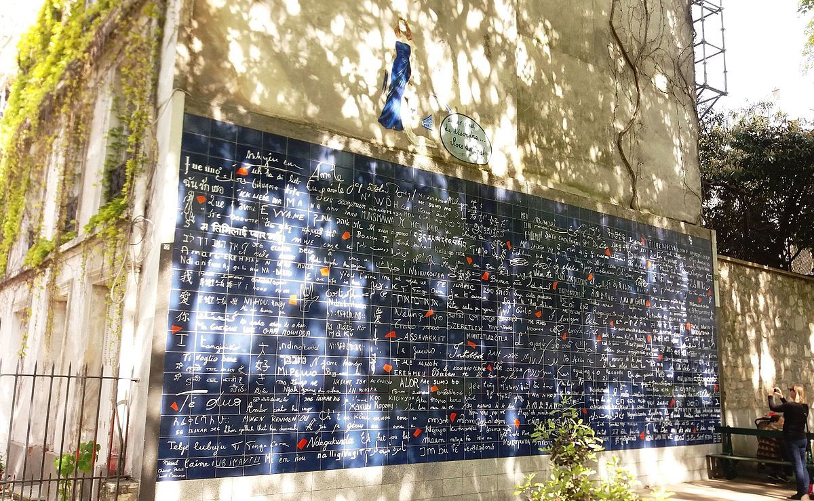

chapter7.2--handout
Background Information
Bois de Boulogne 布洛涅森林
Jake、Brett和伯爵三人一起在布洛涅森林的一家餐厅吃了晚饭（We dined at a restaurant in the Bois）. 这片森林坐落在巴黎城西，跟巴黎东南的文森森林（Bois de Vincennes）一起被视为巴黎吸收氧气的两扇“肺叶”。它的西边是向北流的塞纳河，东边是巴黎的富人区——十六区（16th arrondissement），北临最富庶的塞纳河畔讷伊（Neuilly sur Seine），南靠布洛涅-比扬古（Boulogne Billancourt）.
布洛涅森林原本属于皇家林苑，国王陛下常在这里狩猎。拿破仑三世（Napoleon III ）执政的时候，便请建筑师精心规划，随后，秉承国王的意旨，按陛下的喜欢，以伦敦的海德公园（Hyde park）为蓝本，增设了林荫大道和人工湖泊。
后来，宫廷里的很多大型活动都挪到这里举行，贵宾们吃喝玩乐的要求越来越高，于是只能花钱买脸，逐步修建了动物园、游乐场、赛马场、足球场等娱乐设施。名声日隆，地盘益大，直到“布洛涅”发育成一个鸟语花香，浓荫遍地的休闲娱乐场所。
在贵族渐渐式微后，涌入布洛涅森林的另一批“客人”则多是商界或文艺界的名流，包括那些取得战功的军官，赚了大钱的富商、大亨、银行家，以及声明鹊起的社会名流和艺术家。再比如，著名作家海明威、萨特，以及著名的时装设计师夏奈尔等人。
布洛涅森林也是许多虚构文学作品中的背景场所，比如小仲马的《茶花女》、司汤达的《红与黑》、左拉的《娜娜》、巴尔扎克的《交际花盛衰记》等多部小说中，男女主人公都曾在布洛涅森林中散步幽会、谈情说爱。
普鲁斯特在童年的时候，整日在布洛涅森林中的湖畔散步，在《追忆似水年华》第一卷中，他如此地描写了布洛涅森林：
在我心目中，这林园仿佛就是一座座这样的动物园——各色草木无不具备，种种景色层出不穷，翻过小山就看到洞窟、草原、山岩、河流、沟壑、小丘、沼泽……
布洛涅林园，也是十分复杂，集结着许多自成体系的小世界。此外还有万千细节，我都寄予充分的信任，仿佛给这些转瞬即逝、游移不定的东西注入一个灵魂，使它们取得一件艺术杰作的完整一致。
但布洛涅森林在以高贵优雅的休憩之所闻名的同时，也因为夜晚的灯红酒绿以及荒淫放荡而臭名昭著。所以它在某种层面上也成为了巴黎这座城市本身的一个缩影。
Vocabulary
ostentatious
adj. 好夸耀的，炫耀的；（态度）自负的；讲排场的
原文："I say. Don't be ostentatious. Call him off, Jake."
“嗨，别摆阔气了。叫他退掉吧，杰克。”
💧ostentatious 表示“炫耀的”，也就是showy. 比如：Obviously he had plenty of money and was generous in its use without being ostentatious.
显而易见，他有很多钱，花钱虽大方却不摆阔。
这里伯爵让酒侍给他们拿年份最久的白兰地，Brett便劝他别摆阔了。
antiquity
n. 古人；古老，古代；古迹，古物
原文："Listen, my dear. I get more value for my money in old brandy than in any other antiquities."
“你听着，亲爱的。花钱买陈酿白兰地比买任何古董都值得。”
💧antiquity 在这里指“古董”，是可数名词，相当于antique.
💧此外antiquity还可作不可数名词表示“古代”或“古老”，比如：
The statue was brought to Rome in antiquity (=in ancient time).
这座雕像是古时运到罗马的。
A number of the monuments are of considerable antiquity.
有些历史遗迹相当古老。
Crush Your Problems
1、"I've talked too ruddy much. I've talked myself all out to Jake."
“我已经唠唠叨叨地说得太多了。我跟杰克把什么事都谈透了。”
💧表达精讲
①ruddy 在这里是很口语的一个表达，用于加强语气 ，尤其是表示愤怒和不耐烦。比如：
I wish that ruddy dog would stop barking!（我希望那只该死的狗不要再叫了！）
ruddy是为了避免使用bloody或damn等太过粗俗的词语而延伸而来的一种委婉语（Euphemism）.
②talk oneself out 字面上的意思是“说到筋疲力尽、再无可说的为止”（to talk until one can talk no more）. 比如：She talked herself out and was silent for the rest of the day.（她一下子把所有要说的都倾倒出来了，所以剩下的时间里她都在沉默。）
2、 He pulled up the undershirt onto his chest and stood, his chest black, and big stomach muscles bulging under the light.
他把汗衫撩到胸部，露出黑黝黝的胸脯，大腹便便地站在灯下。
💧表达精讲
bulge 原义是“膨胀，鼓起”，这里stomach muscles bulging形容肚子鼓起来就是“大腹便便”的样子，也可以说one's belly bulges.
另外bulge还延伸出了“骤增”的意思，一般作名词，比如：The baby boom created a bulge in school enrollment.（婴儿潮导致入学人数骤增。）
3、Food had an excellent place in the count's values.
食品在伯爵的价值理念中占有特殊的地位。
💧表达精讲
①had an excellent place 可以理解为地位特殊、重要的（significant）.
②values 表示“价值观念”（the moral principles and beliefs that one thinks is important）. 比如： The countries of South Asia also share many common values.（南亚各国也有许多共同的价值观念。）
4、"How do I know? As soon as we can get the divorce. Michael's trying to get his mother to put up for it."
“我怎么知道？等我办完了离婚手续吧。迈克尔想叫他母亲拿钱来办。”
💧表达精讲
put up 我们已经学习过，当时提到伯爵在资助一个青年："He's putting up for Zizi, you know." 所以put up就表示“资助，提供资金”。这里是Brett的未婚夫想让他的母亲出钱帮他们筹备结婚。
5、"He gives me the willys."
“他使我心惊肉跳。”
💧表达精讲
the willys（也可以写作the willies）相当于the creeps, 都在口语里表示“惊吓，（使某人）毛骨悚然或反感”（a sensation of horror or repugnance, like sth is crawling on one's skin.
比如：I stay away from that old house on the corner—it gives me the creeps/willies!（我要离那个转角的老房子远点，它真的让我感觉毛骨悚然！）
这里是伯爵说自己虽然认为Zizi很有前途但并不想一直把他带在身边，Zizi实际上令他很反感。
6、The drummer shouted: "You can't two time--"
鼓手大声唱着：“你不能对爱人不忠——”
💧表达精讲
two-time（一般两个词中间需要加上连字符）表示“背着……偷情，对恋人不忠”（to be unfaithful to a lover or spouse）, 比如：He doesn’t know Claire’s been two-timing him.（他不知道克莱尔一直对自己不忠。）
表示不忠还可以用cheat on, betray, 或者是wander, 比如："Might her husband be wandering?"（有没有可能她的丈夫出轨了呢？）
Content Analysis
在前面的内容里，我们一直是从当事人Jake和Brett的角度来审视他们的关系，比如虽然总体来看，两个人是彼此相爱的，但双方的实际需求产生了落差（Jake无法在性上满足Brett），由此也形成了不可戳破的隔膜。而今天的内容里，作者从第三者 ，也就是伯爵的视角展现了这段关系在旁人眼中是什么样子。我们会发现的是，在别人看来，Jake和Brett是天生注定的一对——
💧Clue 1: Jake and Brett are meant for each other.
Evidence 1: "I've talked too ruddy much. I've talked myself all out to Jake."
"I should like to hear you really talk, my dear. When you talk to me you never finish your sentences at all."
“我已经唠唠叨叨地说得太多了。我跟杰克把什么事都谈透了。”
“我真想听你好好地说说话，亲爱的。你跟我说话老是说半句留半句。”
Evidence 2: "You are very nice people," he said. He was smoking a cigar again. "Why don't you get married, you two?"
“你们俩都非常好 ，”他说。他又抽起雪茄来。“你们为什么不结婚，你们俩？”
首先伯爵的第一段话暗示了Brett和Jake在一起更能侃侃而谈，这一点已经令他感觉嫉妒了。虽然Brett嘴上对伯爵的称呼非常亲昵（darling），但实际上她跟伯爵却没有过多的亲近，比如她会为了和Jake单独说话而把伯爵打发走。所以在伯爵看来，他们俩就是应该结婚的关系。
其次伯爵这个人物的设定也有一定的深意。他的年龄可以算是这一群年轻人里面最大的，两个细节可以看出来：一是他提到自己参加过的战争和革命的次数（"I have been in seven wars and four revolutions," the count said）; 另一个是他在舞厅里的表现（"Don't you dance, count?" I asked. "No. I'm too old." "Oh, come off it," Brett said. "My dear, I would do it if I would enjoy it. I enjoy to watch you dance."）
由此伯爵的视角也是更为成熟并且富有经验的，可以为读者提供一个贴近客观的参考。因为我们的叙述者也是故事的参与者，所以无法独立于情节之外，塑造一个长者的形象就可以起到弥补的作用，当然我们也可以把他看成作者自己在故事里化身。
说到这里，我们要再提到作者是如何通过对伯爵的生活态度等方面的刻画来传递自己的价值观，这也是之前简单介绍过的，在海明威看来：只靠读书来认识世界的生活是无益甚至有害——
💧Clue 2: Truely living life is important than just reading about it in books.
Evidence 1: "You ought to write a book on wines, count," I said.
"Mr. Barnes," answered the count, "all I want out of wines is to enjoy them."
“你应该写一本论酒的专著，伯爵，”我说。
“巴恩斯先生，”伯爵回答，“我喝酒的唯一乐趣就是品味。”
Evidence 2: "You see, Mr. Barnes, it is because I have lived very much that now I can enjoy everything so well. Don't you find it like that?"
“你瞧，巴恩斯先生，正因为我经历坎坷，所以今天才能尽情享乐。你是否也是这么看的？”
当Jake提议伯爵应该写书时，伯爵的回答是喝酒的时候享受酒的美味才是重要的，而不是为了写一本论著而去喝酒。这里其实是在映射Cohn，这位才露头角的新兴作家。比较讽刺的是在上一章的内容里 ，Cohn离开Frances的借口就是巴黎的生活太无趣以致于才思枯竭，所以他要离开去其他地方寻找写作素材。
Cohn在某种程度上很沉迷于写作这件事，但他的缺点也正在于他对写作的执着超过了生活本身。书作为对想象的延伸和知识的拓展本无可厚非，但作者在这里想强调的是生活最本质的快乐并不是从知识而来的，而是实际的体验。
另一方面，Cohn的这种迷惘和无切实际其实也是一战后青年的普遍精神状态——无法在现实里找到生活的根基，只能在书本或是其他可能的想象世界里寻找答案，这也造成了他们极度的空虚和游离。
Today's Bonus
💧在蒙马特一定不能错过的风景
蒙马特高地（Montmartre）在这本小说里也是主角们经常活动的地方之一，比如在稍前的内容里，Jake和Brett借口从舞厅脱身的时候就说他们要去蒙马特约会（"We're going," Brett said. "We've a date up at Montmartre"）, 以及今天的内容里Jake, Brett和伯爵三个人也一起去了蒙马特的一间咖啡馆（Finally we went up to Montmartre. Inside Zelli's it was crowded, smoky, and noisy）.
蒙马特可以算是巴黎景点最密集的一个区。它本身是一片高地，相对巴黎其他部分的地势都很高，所以塞纳河也无法逆流而上经过这里。但这里却孕育出了极为浓厚的宗教、艺术和浪漫氛围，每一处都是风景和故事。所以今天的彩蛋我们就来看看在蒙马特有哪些不容错过的风景吧~
小丘广场（Place du Tertre）
在蒙马特高地还是巴黎近郊一个小村庄的时候，小丘广场就已是人们欢聚消遣的集会场所，现如今则成了一个画家和艺术家的聚集地。广场大致位于蒙马特区的中心位置，紧邻圣彼埃尔教堂和圣心大教堂。 十九世纪末的著名画家如保罗高更、卢梭、雷诺瓦、毕加索、布拉克等都曾在此为生计作画。
红磨坊（Moulin Rouge）
红磨坊的祝兴歌舞节目取得巨大成功得益于1870年普法战争后，曾因战事过度操劳的人们需要寻找一个放松的地方，于是酒吧和歌舞厅就成了当时人们的首选。红磨坊于1889年起建，很快就成为了人们寻找另类相遇的情色场所，更成为艺术家们寻找灵感和相互结识的地方。
它之所以举世闻名，原因之一是画坛怪杰亨 利·图卢兹-劳特瑞克（Henri de Toulouse-Lautrec）以歌舞厅为题材创作了一系列名画，二则是这里上演的著名法国“康康舞（Cancan）”现今几乎被世界各国视为了法国的“民族舞蹈”。
狡兔酒吧（Le lapin agile）
这间酒吧可以说是巴黎有名的娱乐场所中最古老的一家了。 “狡兔”这个奇怪的名字来自于画家安德雷·吉乐（André Gill）的一幅奇特的画，画中一只人性化的兔子从一只平底锅中跳出，从此这只兔子就与这个酒吧结合在了一起。最初这间酒吧叫“吉乐的兔子（le lapin à Gill）”，随后又被改为现在的用名“狡兔”。
酒吧老板弗雷德（Frédé）爱好艺术，甚至他自己也进行一些艺术创作。当时酒吧的常客如果没有钱或者不想付钱，可以用一张自己的画代替酒钱来付帐。这样弗雷德就收集了 许多著名画家未成名前的作品，其中包括了毕加索等人的作品。
爱墙（Le mur des je t’aime）
爱墙就在蒙马特半山腰上的一个街头小公园里。公园是一个巴黎街头随处可见的那种公众休憩场所，墙也是一面不是特别高大厚重的普通石墙，但是 墙上却有用311种语言和方言的手写笔迹的“我爱你”：je t'aime（法语）, ti amo（意大利语）, ich liebe dich（德语）…… 在墙的上方还有一幅漫画，画中女郎身穿深蓝色吊带裙，斜倚在一张小桌旁，画旁边一行小字写道：“保持理智，勿要强求（soyons raisonnable, exigeons l'impossible）”

爱墙的发起者弗雷德里克·巴隆（Frédéric Baron）是法国一位以写爱情歌曲见长的音乐家，从1992年他开始收集和记录下了1000多条用 300多种语言写就的“我爱你”的手写体，并于1998年就此撰写了一本书，成功发行5万册。巴隆早期的爱情歌曲都是在他居住在蒙马特高地时写下的，因此 他选择这里作为爱墙的归宿。
大家可能注意到了在白字中间还有很多小的红色色块。据说这些色块喻义破碎的心，作者期冀用纯洁和美好的爱来重新弥合这颗散落在爱中的已碎的心。在 2001年情人节举行的爱墙落成仪式上，有100只白鸽展翅飞向蓝天，所要表达的就是人们对和平与爱的渴望。
蒙马特既有巴黎的温柔浪漫，又脱离了喧嚣浮华，如果有机会去巴黎游玩，一定不要错过这一片别有韵味的风景！